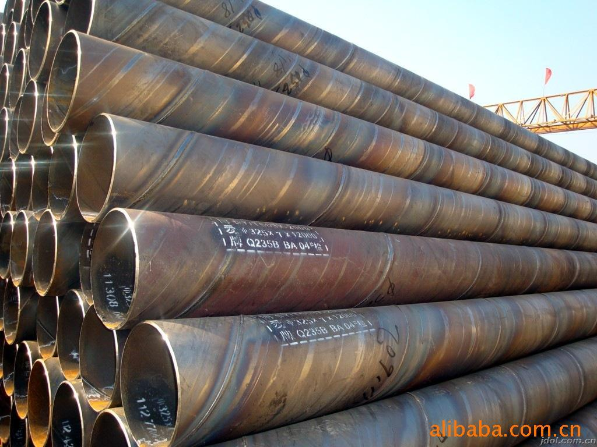

螺旋管信息保持较乐观预期

5月中旬以来，国际取向硅钢市场总体波动，资源质变化不大，商家心态颠簸，降价出货景象有所增加，螺旋管信息，不过市场总体成交情况尚未完全恢复，张望心态仍绝对浓重。目前上海主流30Q120取向硅钢报价维持在16600元/吨左右。从资源上看，条料和头尾料、退让材仍受市场喜爱，二次料市场炽热情况有所降温。
宝钢、武钢都对6月份Q345B矩管出厂价钱上调，显示对后市仍坚持较悲观预期，但对市场价钱影响不大。虽然这两个月来钢厂调涨态势放缓，但仍坚持下跌，避免了贸易商因资金紧张降价出货的景象，这对现货市场有较强的波动作用。从资源上看，次要市场到货资源不多，贸易商库存有所下降。但由于库存占用资金量大，局部商家有降价出货压力。不过钢厂依然对后市看好，订单组织依然比拟足，且消费情况也较为正常。因而，市场供给情况绝对正常。
另一方面是一带一路战略下电网国际协作晋级以及电力设备走出国门，都将对取向硅钢发生积极影响。5月份，国度电网巴西特高压项目曾经开工;中国与周边国度已建成18条跨国输电通道，其中国度电网公司运营10条与周边国度的互联互通输电线路。一带一路掩盖国度总人口到达46亿，绝大局部国度都有满足用电量增长、加大电力投资的刚性需求，但这些国度根本没有强势的电工设备企业。国际电力需求的增长及与中国协作的增强，将直接带动输配变设备的需求，利好Q345B矩管的开展。目前局部取向硅钢厂家反映，中东等地电力建立升温，取向硅钢出口数量将相应添加。
从变压器产量来看，第一季度变压器产量增长不多，显示需求并没有放量。1月~3月份，我国变压器产量同比增长4.64%，增长比拟分明的有天津、螺旋管信息，湖北、重庆、宁夏和内蒙古，涨幅均超越50%，但甘肃、上海、河北三省(市)下滑也较为严重。不过随着第二、三季度电力建立放慢，变压器消费淡季到来，依然有利于取向硅钢需求释放。
不过，短期来看，市场在此前延续拉涨的状况下仍需求休整，除特高压对应高电压等级变压器厂家外，少数下游厂家由于全体经济不景气，运营状况不容悲观，对降本钱、保利润的要求仍比拟高，对取向硅钢压价也较为分明。同时，取向硅钢上下游企业资金链比拟紧，占用资金量大，也带来一定的负面影响。局部企业推销热情不高，仍处于库存消化周期。
地址：河北沧州螺旋钢管生产基地
手机：186-3170-5801 == QQ791117